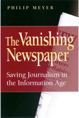

THE
VANISHING
NEWSPAPER:
SAVING
JOURNALISM
IN THE INFORMATION AGE
Tim
Porter's chapter-by-chapter review
American
Journalism Review Feb./Mar. 2005
Baltimore
Sun Feb. 2005 (requires free
registration)
St.
Louis Post-Dispatch Jan. 2005
WUNC
Public Radio Jan. 2005
Kansas
City public radio KCUR Aug. 10, 2004
WCHL
Chapel Hill Feb. 2, 2005
Leonard
Witt Interview March 15, 2005
Ted
Vaden, News & Observer
March 27, 2005
|